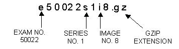

The image file will be copied to /usr/g/insite/bin/gzip/e50022s1i8 It will then be compressed with /usr/g/insite/bin/gzip
The compressed image file is then copied to the directory /usr/g/insite/tmp. Below is the system naming convention for extracted images.
Illustration 7: Naming Convention for Extracted Images
